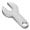
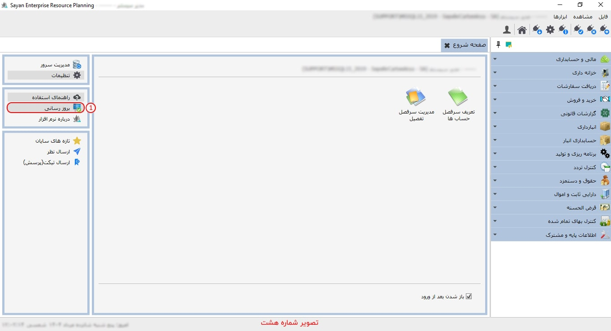
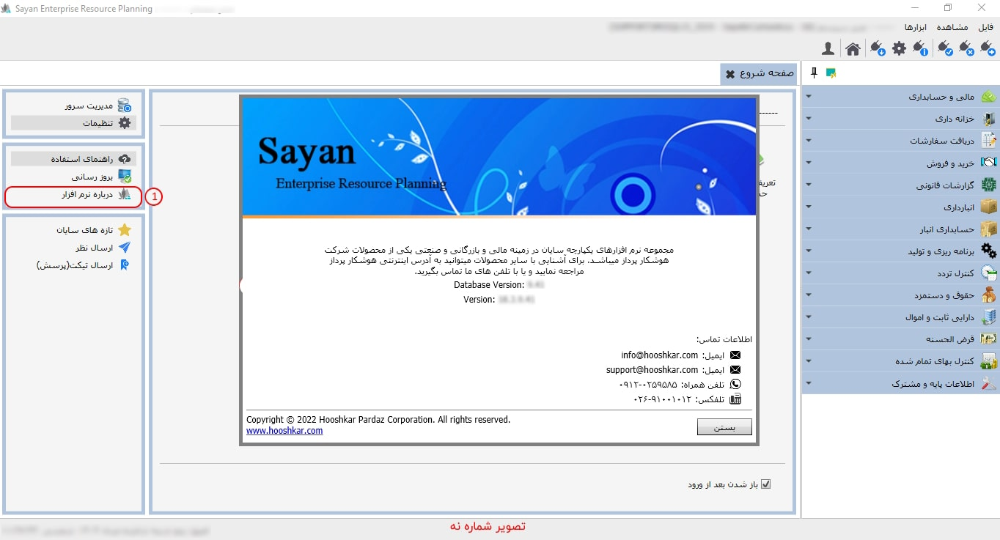
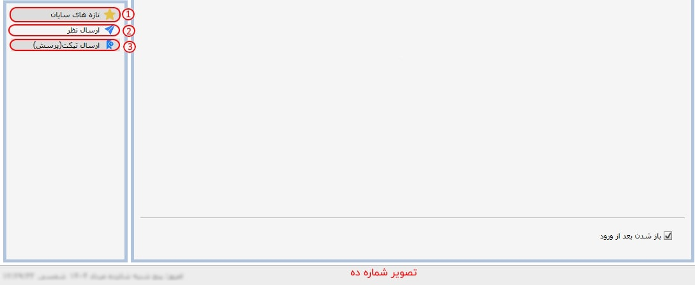

برای ورود به صفحه ی شروع همانند تصویر در صفحه ی اصلی نرم افزار بر روی علامت خانه(Home) کلیک کنید:

برای ادامه مطلب به تصویر شماره دو مراجعه نمایید.
-کادر شماره یک: هر کاربر می تواند «صفحه شروع» به همراه ابزارهای کاربری خود را تنظیم کند، در واقع آیتم های نمایش داده شده در صفحه شروع برای هر کاربر با توجه به میزان کاربرد ابزارها با کاربران دیگر متفاوت است . در بالای «صفحه ی شروع»، همانگونه که پیشتر گفته شد، نام پایگاه داده، نام کاربر و اطلاعات مرتبط با آن قابل مشاهده است. شما می توانید، برای دسترسی بهتر و سریع تر به هر یک از ابزارها و امکانات، آنها را به میزکار خود انتقال دهید.
برای ادامه مطلب به تصویر شماره سه مراجعه نمایید.


-کادر شماره یک: برای تنظیم میز کار، می توانید از این آیکون استفاده نمایید.
-کادر شماره دو: در این قسمت، می توانید فهرست زیر سیستم هایی را که می خواهید به عنوان میز کار برگزینید، مشاهده و انتخاب نمایید.
برای ادامه مطلب به تصویر شماره چهار مراجعه نمایید.

-کادر شماره یک: در این بخش میز کار مد نظر انتخاب شده خود را می توانید مشاهده نمایید.
-کادر شماره دو: در صورت تمایل به نمایش «صفحه شروع» هنگام ورود به پایگاه داده، گزینه «بازشدن پس از ورود» را فعال نمایید.
برای ادامه مطلب به تصویر شماره پنج مراجعه نمایید

 مدیریت سرور :
این پنجره ارتباط با اس.کیو.ال و پس از آن پنجره
مدیریت سرور را نمایش می دهد.
همانطور که پیشتر توضیح داده شده است، شما از
این طریق می توانید به صفحه مدیریت سرور
دسترسی داشته و تنظیمات و عملیات مورد نیاز را
بر روی پایگاه داده سرور انجام دهید.
مدیریت سرور :
این پنجره ارتباط با اس.کیو.ال و پس از آن پنجره
مدیریت سرور را نمایش می دهد.
همانطور که پیشتر توضیح داده شده است، شما از
این طریق می توانید به صفحه مدیریت سرور
دسترسی داشته و تنظیمات و عملیات مورد نیاز را
بر روی پایگاه داده سرور انجام دهید.
برای ادامه مطلب به تصویر شماره شش مراجعه نمایید.

 تنظیمات
: توضیحات این بخش را مطالعه فرمایید
تنظیمات
: توضیحات این بخش را مطالعه فرمایید
برای ادامه مطلب به تصویر شماره هفت مراجعه نمایید.

-راهنمای استفاده(کادر شماره یک): در «صفحه شروع»، منوی دسترسی به راهنمای نرمافزار قرار دارد که با کلیک بر روی آن میتوانید محتوای راهنما را مطالعه کنید. همچنین، در تمامی بخشهای نرمافزار، با فشردن کلید F1، راهنمای مربوط به همان صفحه نمایش داده خواهد شد.
-کادر شماره دو: این بخش، این امکان را به شما میدهد که راهنما مدنظرتان را مشاهده و مطالعه نمایید.
برای ادامه مطلب به تصویر شماره هشت مراجعه نمایید.

-بروزرسانی(کادر شماره یک): با استفاده از این ابزار، وارد حساب کاربری خود خواهید شد. سپس از طریق تب «خدمات»، گزینه «نسخه جدید نرمافزار» را انتخاب و آن را دانلود نمایید. روش بهروزرسانی نرمافزار در راهنمای «مدیریت سرور» به تفصیل شرح داده شده است.
برای ادامه مطلب به تصویر شماره نه مراجعه نمایید.

-درباره نرم افزار(کادر شماره یک): با انتخاب این گزینه، پنجرهای به نمایش درمیآید که شامل اطلاعات شرکت هوشکار، همراه با توضیحات مربوط به پایگاه داده و نرمافزار میباشد.
برای ادامه مطلب به تصویر شماره ده مراجعه نمایید.

-تازه های سایان(کادر شماره یک): برای مشاهده وبسایت و دریافت آخرین اطلاعات مربوط به نسخههای منتشرشده نرمافزار، همچنین مطالعه مطالب آموزشی، میتوانید از این آیکون استفاده نمایید

-ارسال نظر(کادر شماره دو): در صورت اتصال به اینترنت، با استفاده از این آیکون میتوانید نظرات، پیشنهادات و انتقادات خود را مستقیماً برای کارشناسان هوشکار ارسال نمایید.
-ارسال تیکت(کادر شماره سه): در صورت بروز اشکال یا وجود پرسشهای فنی مرتبط با نرمافزار، لطفاً از طریق ثبت تیکت با کارشناسان فنی در ارتباط باشید تا در کوتاهترین زمان ممکن پاسخگو باشیم.